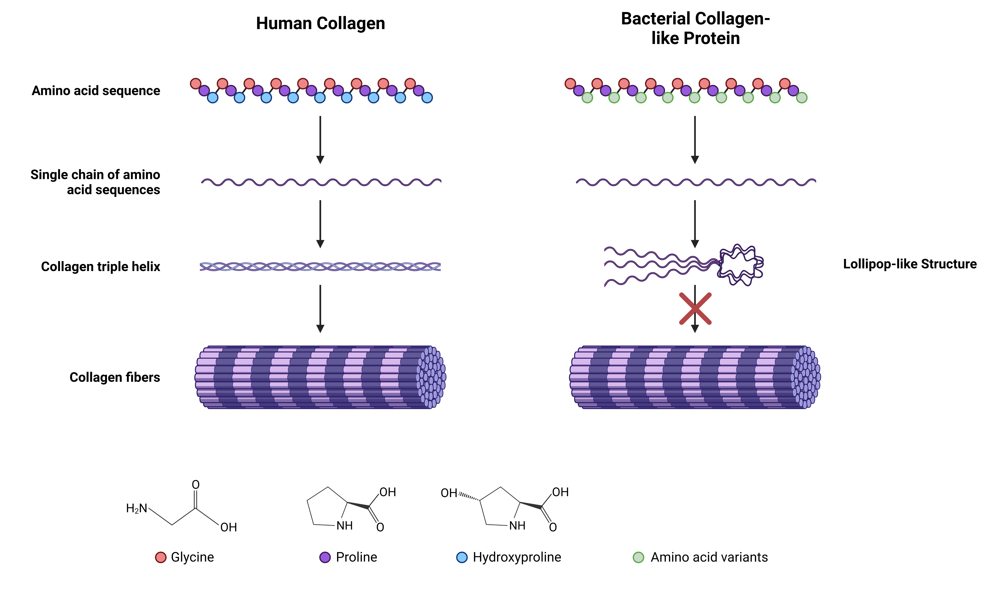

Describe how and why you chose your iGEM project.
Please see the 2023 Medals Page for more information.
With the aim of revolutionizing tissue engineering and regenerative medicine (TERM), the NYUAD iGEM team is focusing on to producing a bacterial collagen-like protein as a sustainable substitute for animal-derived collagen. Collagen, a major ECM component that is ubiquitous in the human body, is widely used for drug delivery, gene delivery, and TERM due to its biocompatibility and low immunogenicity. Collagen is known as an optimal scaffold base for osteochondral tissue engineering. Traumatic injuries, congenital defects, and aging often result in large bone or cartilage defects that require surgical intervention for functional restoration. It is estimated that over 2.2 million such procedures are performed annually, with the number only growing (Archunan & Petronis, 2021). Moreover, collagen is the key player behind the cornea’s transparency and functioning. However, certain diseases, such as keratoconus, can disrupt its functioning; a current promising technique for resolving this issue is a bioengineered corneal transplant - made entirely of collagen. This procedure has been shown to work on 20 advanced keratoconus patients, but has the potential to change the lives of over 175 million lives of people suffering from vision loss (Gomes et al., 2022). Furthermore, the global market for collagen wound dressings - usually from bovine sources - is USD 926 million, a value expected to expand by a compound annual growth rate of 5% (Mathew-Steiner et al., 2021).
Collagen is currently commercially extracted from bovine, porcine, and marine sources; this brings about a range of issues, including the possibility of disease transmission, poor scalability, and ethical and religious concerns. These concerns motivated us to synthesize an engineered, low-cost, and highly scalable alternative to animal-derived collagen by using bacterial collagen-like protein (CLP). Our iGEM project aims to address this issue and could offer several advantages, including high purity, consistent quality, ample supply, and cost-effectiveness.
Our project focuses on the incorporation of Hyp and other non-coding amino acids, using genetic code expansion (GCE), along with functional peptide sequences in recombinant CLP produced in E. coli. Several collagen-like sequences have been identified in bacteria, and among these Scl1 and Scl2 from Streptococcus pyogenes are perhaps most widely studied (Xu et. al., 2002). Bacterial collagen-like protein provides a blank canvas onto which modifications can be introduced as desired for specific applications, such as heparin-binding site and integrin binding site (Peng et. al., 2014). However, Scl2 forms a two-domain lollipop-like structure in contrast to the fibrillar structure of mammalian collagen (Figure 1). This is due to the lack of enzymes responsible for post-translational modifications in bacteria. Incorporation of non-coding amino acids (ncAA), such as hydroxyproline (Hyp), through GCE has been gaining a lot of attention. Conventional approach to introducing Hyp relies on the co-expression of prolyl-4-hydoxylase in yeast-based systems, but GCE is a viable alternative. Usually, GCE relies on the use of modified tRNA/synthetase pair, however, this process is time intensive. Instead, we will be using an approach that incorporates residue specific Hyp in the bacterial CLP.
As shown in figure 2, there are two main approaches to GCE for incorporating ncAA, namely site-specifc and residue-specific (Breunig et. al., 2021). Site-specifc approach requires an engineering orthogonal tRNA/aminoacyl-tRNA synthetase (aaRS) pair which is responsible for aminoacylation of ncAA to tRNA. The ncAA of interest is re-assigned a specific codon and subsequently can be used for introducing ncAA at specific points in the protein. However, this method is difficult due to the requirement of producing tRNA/aaRS pairs and is limited by the rate of aminoacylation. Residue specific incorporation refers to the replacement of a particular canonical amino acid by a non-cannonical amino acid without any preference for the site of the replacement. For this, specific E. Coli auxotroph strains with mutations that prevent the synthesis of particular cannonical amino acid are used. First, E. coli is grown on media containing all 20 amino acids then sifted to media containing 19 amino acids plus the ncAA or ncAA is added after depletion of canonical amino acids. Since the auxotroph strain has no alternatives, it incorporates the ncAA in place of the canonical amino acids. Ilamaran et. al. (2019) used a similar approach for the incorporation of Hyp into Scl2 and verified the formation of a fibrillar structure, similar to human collagen. This showed that residue-specific gene code expansion is a viable option to introduce ncAA in recombinant protein.
We encourage you to put up a lot of information and content on your wiki, but we also encourage you to include summaries as much as possible. If you think of the sections in your project description as the sections in a publication, you should try to be concise, accurate, and unambiguous in your achievements. Your Project Description should include more information than your project abstract.